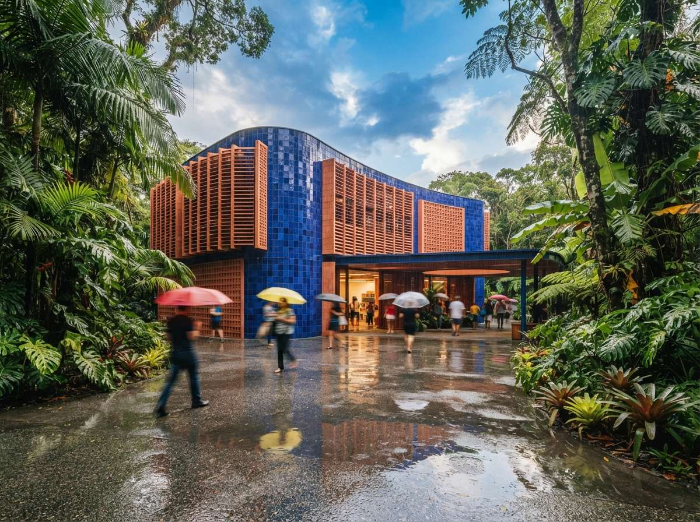
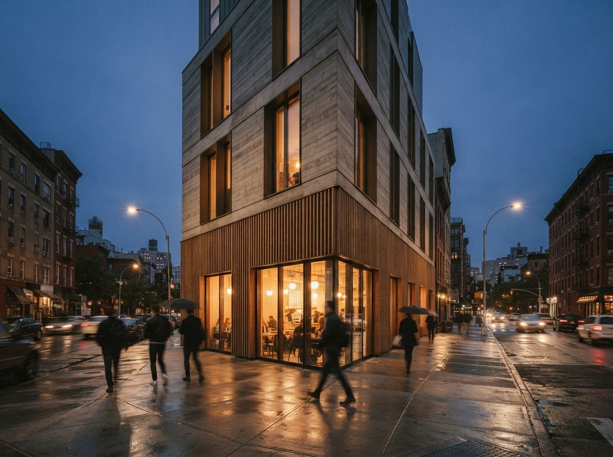

Most of the advice on this site, and most of the worry in the wider conversation, is about accuracy. Does the render match the model. Did the AI move a wall, invent a window, change the brick. That worry is correct, but it belongs to a specific moment: design development and delivery, when there is a real scheme the image has to be honest about. The concept stage is a different animal, and treating it the same way is a quiet, common mistake that costs architects the one thing the early phase is supposed to give them, which is range.
Schematic design is divergent work. You are not documenting a decision, you are hunting for one. The job is to put many possibilities on the table fast, cheaply, and without commitment, so the good direction can announce itself. An AI model that improvises, that throws materials and massing and a quality of light you would not have reached for, is doing exactly that job. The behaviour everyone calls hallucination, and rightly fears at delivery, is the engine of a good concept session. The skill is knowing which phase you are in and picking the tool that matches it.

Why the loose tools win early
The split is cleaner than most tool comparisons. On one side sit the free-form image generators: Midjourney, Adobe Firefly, the current ChatGPT and Nano Banana image models. They take a prompt and a reference, not a 3D model. They are fast, they are cheap, and they will give you twenty directions in the time a geometry-locked tool needs to render one faithful view. On the other side sit Veras, ArkoAI and the in-application renderers, whose entire value is staying true to the model you feed them. That faithfulness is what you want at the end and what gets in your way at the start. We drew the broader version of this line in our piece on purpose-built tools versus image generators; the phase you are in decides which side you want.
Used at concept, a tool like Midjourney is not pretending to be your building. It is a mood engine, an idea pump, a way to see a courtyard scheme rendered as timber, as board-formed concrete, as something glassy and cold, in the time it takes to type three prompts. None of those images are buildable and none of them need to be. They are arguments about direction, and you keep the one that makes the room lean forward.
Loose does not have to mean rudderless, and this is the craft most architects skip. Feed the generator a rough massing screenshot from SketchUp or a hand sketch as an image prompt, set its influence low, and the model improvises around your geometry instead of away from it. You still get range, materials, light and atmosphere you did not draw, but it stays in the neighbourhood of the real site, the real proportions, the real view. That single move, your sketch as the seed rather than a blank prompt, is the difference between concept images that inform the design and pretty pictures that pull it somewhere you can never build. It also makes the later handoff cleaner, because the chosen direction already roughly matches the model you will render for real.
At concept, you are not asking the model to tell the truth. You are asking it to suggest one.
| Need | Concept stage | Design development onward |
|---|---|---|
| Goal | Range, many directions | Fidelity, one true image |
| Right tool | Midjourney, Firefly, free-form gen | Veras, ArkoAI, in-app renderers |
| Input | Prompt and reference | Your 3D model |
| Hallucination | A feature | A defect to catch |
| Speed need | Minutes per batch | Quality per final frame |
| Shown to client as | Direction, mood | The proposed scheme |
The trap that makes architects swear off this entirely
Here is where the practice gets burned, and why some offices have banned concept-stage AI outright. You generate a stunning Midjourney image to explore a direction. It is gorgeous, it is loose, it is fiction. You put it in the deck because it communicates the feeling so well. The client sees one photoreal hero shot of a building, and from that second it is the design. They anchor on it. They show their partner. Eight weeks later the buildable scheme, constrained by budget, code and gravity, looks different, and the conversation is no longer about whether the design is good. It is about why you took something away.
That failure is real, but the cause is not the tool. It is presentation. A concept image that is allowed to look like a finished, single, photoreal proposal will be read as one, every time. The same image, framed as one of six directions, captioned as mood and intent, given a treatment that reads as sketch rather than photograph, does its job and stays in its lane. The discipline of separating exploration from proposal is the same one we argued for in the presentation layer: what you say about an image governs how it is read more than the image itself does.

How to actually run it
The workflow that keeps the upside and dodges the trap is mostly about labelling and timing.
Generate wide, in a batch, before you are attached
Spend the first session producing volume: ten or twenty directions across materials, massing and mood, no precious single image. Range is the deliverable. You are buying yourself options, and the cost of a bad one is a deleted file, not a redrawn week.
Mark concept images as concept
Give them a visual signal that they are not the scheme: a board layout, a sketch or painterly treatment, a caption that says exploration, never a lone glossy hero passed off as the building. The goal is that a client could not mistake it for a proposal if they tried.
Switch tools the moment the design firms up
Once a direction is chosen, the loose generator has done its work and becomes a liability. Move to a geometry-anchored tool that renders your actual model, and start applying the accuracy discipline that belongs to delivery, the kind we lay out in our geometry hallucination checklist. The honesty that was a constraint at concept is now the whole point.
Our take: match the tool to the phase, not the brand
The argument about which AI render tool is best has a hidden flaw: it assumes one tool for the whole project. It is the wrong frame. The best concept tool and the best delivery tool are different tools, with opposite virtues, and an office that buys into a single accuracy-first stack ends up fighting it through the one phase where accuracy is beside the point. Let the model improvise while the design is molten, then pin it down once the design is set.
So the next time a render tool refuses to invent during a schematic, do not push harder. Close it, open the loose one, and let it lie to you on purpose. The truth can wait until there is something true to draw.
Based on this week's intel sweep of 2026 AI rendering coverage for architects, including current guidance on concept-stage image generators versus in-application renderers, community discussion of where each fits in a project, and Vista Studios hands-on use of generative tools across the design phases. Tool behaviour and model versions change; test a generator's current output before relying on it for client work. No affiliate relationship with any tool named.